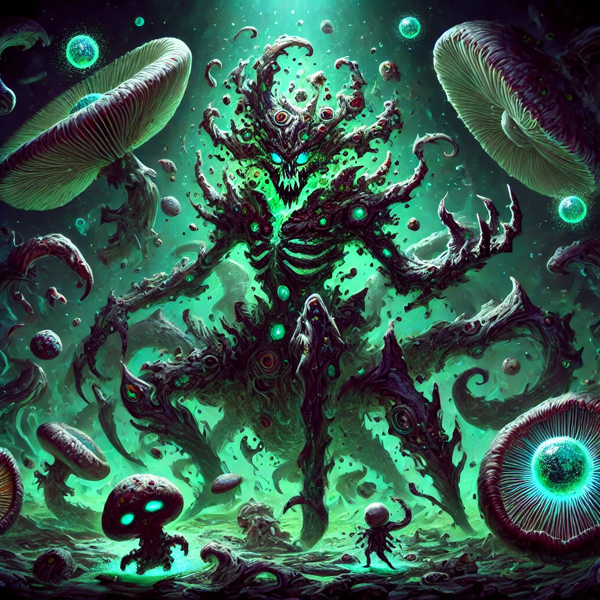

Ysh’Ta est une masse organique protéiforme cauchemardesque presque indescriptible. Elle utilise des spores.
Location : Néant
Relations : Kog’Maw, Cho’Gath, Kha’Zix, Kai’Sa
Role : Mage / Slayer
Range Type : Range (AA)
Damage Type : AP
Mana: yes
Has CC: 2
Has dash/TP: 1
Difficulty : Medium
Current balance estimation : Probably OP
Last Edited Date: 29/10/24
Une spore apparaît sur le cadavre d’un champion qui meurt près de Ysh’Ta. Les spores sont invisibles pour les
ennemis.
Dans plusieurs cas une spore peut exploser pour infliger des dégâts de zone.
Une spore explose si elle est trop éloignée de Ysh’Ta.
Une spore explose si Ysh’Ta marche dessus.
Si trois spores existent, elles forment un triangle organique qui inflige des dégâts le long de son périmètre, puis
les spores explosent.
Ysh’Ta crache une spore sur le sol, un mur, un bâtiment, un sbire, un monstre, ou un champion allié ou ennemi. La spore se fixe et demeure sur sa cible. Si la cible est un ennemi, sa vision est réduite pendant une seconde.
Ysh’Ta peut dash sur une spore en cliquant dessus, ce qui fera exploser la spore.
Le corps de Ysh’Ta se divise en deux corps identiques avec chacun une lifebar de 50% des hp actuels de Ysh’Ta. Les deux corps restent attachés entre eux par un filament cellulaire, la distance entre les deux corps est fixe. Des projectiles ou champions peuvent passer entre les deux corps de Ysh’Ta sans que cela l’atteigne.
Ysh’Ta peut réactiver sa compétence pour reformer un corps unique. Si elle se reforme sur un ou plusieurs champions ennemis, ils sont étourdis et subissent des dégâts. Si un corps de Ysh’Ta meurt, elle retrouve alors un corps unique avec les hp restants et une spore apparaît à l’emplacement du corps perdu.
Ysh’Ta crache une aiguille contaminée qui lui permet de prendre le contrôle d’un champion en échange de sa propre vie : Ysh’Ta meurt si l’aiguille touche un champion ennemi, une spore apparaît sur le cadavre de Ysh’Ta.
Ysh’Ta peut alors contrôler le champion atteint pendant 3 secondes : Le déplacer, utiliser les spells, les auto-attaques et summoners spells. Les dégâts du champion sont retournés contre ses alliés.
Au terme des 3 secondes, si le champion contrôlé est encore en vie, le joueur récupère le contrôle de son champion et tous les cooldowns qui ont été utilisés par Ysh’Ta.